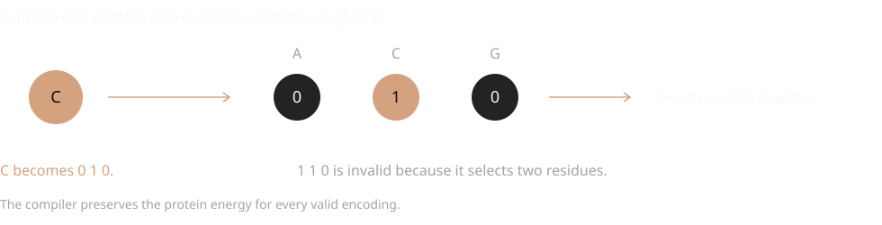

The QUBO encoding
We turn each residue choice into bits.
To use a binary sampler, we first translate each residue choice into a group of on-or-off variables.

We add an energy penalty when a group selects no residue or more than one residue.
For every valid sequence, the binary energy remains exactly the same as the original protein energy.